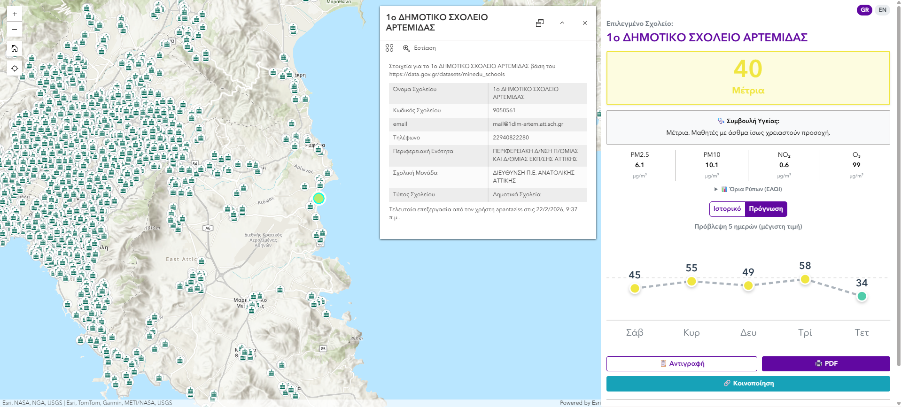
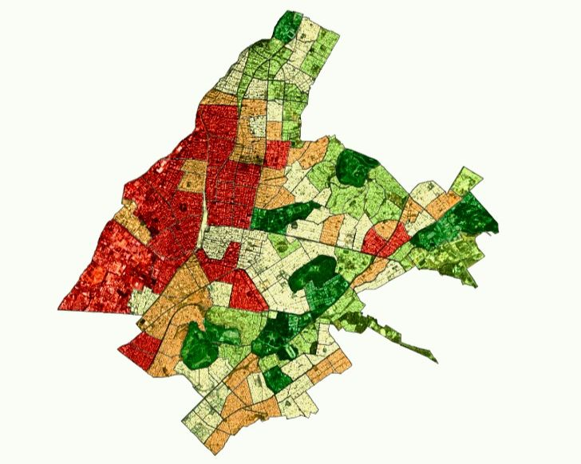
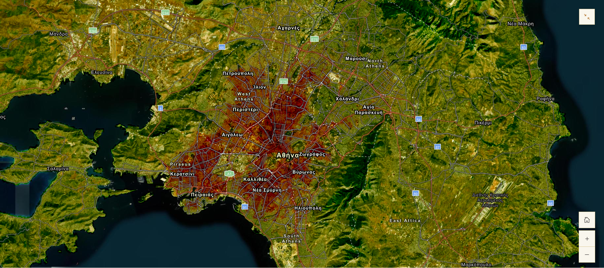
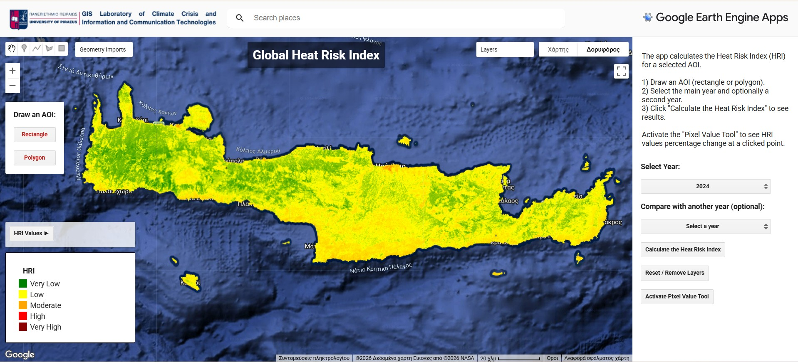
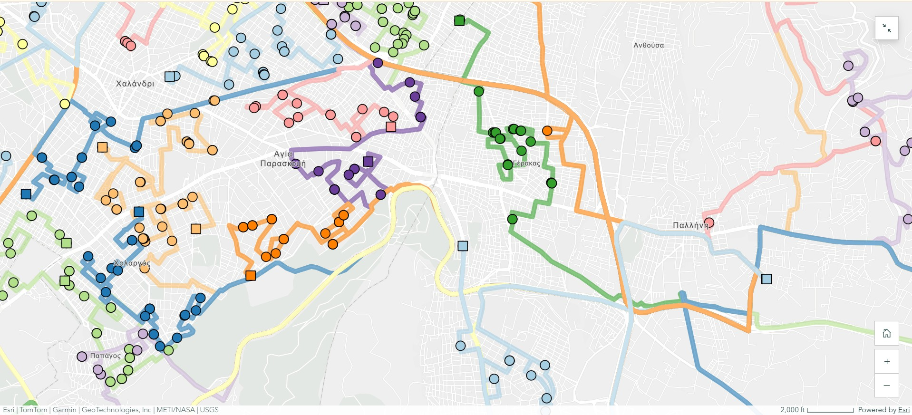

Mapping the
climate crisis into action.
Project Manager · EU Funded Programmes | GIS & Remote Sensing
I use GIS and remote sensing to solve real environmental problems, from urban heat and air quality to fire risk and transport logistics, and manage EU-funded projects in energy transition and climate resilience at SDA (Sustainable Development Advisory).
Project management grounded in geospatial science, turning EU funding into climate action.
I'm an environmental engineer and project manager working at the intersection of geospatial science and sustainable development. I currently manage EU-funded projects (Horizon Europe, LIFE, European Urban Initiative) at SDA, Sustainable Development Advisory, focused on energy transition and climate resilience for municipalities across Greece and Europe.
My project management is hands-on and technically informed: I coordinate international consortia, prepare deliverables and reports, and keep budgets and timelines on track, while still being the person who can open ArcGIS Pro and build the analysis myself.
From heat-vulnerability mapping for the Municipality of Athens to optimizing school-bus fleets and building real-time air-quality observatories, I turn satellite data and spatial models into decisions that protect people and the environment.
Featured GIS projects
Selected technical work spanning thermal risk modelling, route optimization, and operational web-GIS. These projects are the technical foundation behind my project management: I understand the work I coordinate.

Web GIS · Award EntryAir Quality Observatory for Greek & Cypriot Schools
A Web GIS application monitoring real-time air quality across educational institutions in Greece and Cyprus. Built on Copernicus (CAMS) and Open-Meteo data, it surfaces the European Air Quality Index and key pollutants (PM2.5, PM10, NO₂, O₃), with five-day history and forecast so educators can safely plan outdoor activities - plus automated PDF reports and social sharing. Created for the ADONIS TICKET competition, in memory of Adonis, founder of Marathon Data Systems.

Heat & ClimateHeat Vulnerability Index - Athens Municipality
Evolved a Heat Risk Index into a full Heat Vulnerability Index (HVI), integrating environmental data with socio-economic factors to pinpoint high-risk neighborhoods across the municipality.

Heat & ClimateHeat Risk Index - Attica Peninsula
A localized HRI built in ArcGIS Pro analyzing Landsat 8 and Sentinel-2 imagery at 20×20m resolution alongside population density, revealing thermal hotspots in Central Athens.

Heat & ClimateHeat Risk Index Calculator - Northern Hemisphere
A Google Earth Engine project that automates the full Heat Risk Index workflow, returning a classified raster for any location across the Northern Hemisphere.

Optimization · MSc ThesisSchool Bus Routing Optimization
An automated routing model (fleet size N=106) built with ArcGIS Network Analyst and ModelBuilder. Achieved a 33.4% reduction in fleet requirements, 20% lower CO₂ emissions, and savings of €96.6 per fleet route.
Smaller projects & highlights
ArcGIS Workflows for Climate Change
Presentations on GIS workflows for climate resilience, adaptation and disaster response (MSc, Univ. of Piraeus).
Professional experience
Project Manager · EU Funded Programmes Unit
- Manage the implementation of EU-funded projects (LIFE, EUI, Horizon Europe) in energy transition and climate resilience, coordinating activities, deliverables and timelines.
- Facilitate collaboration with international consortium partners and municipalities, ensuring alignment across interdisciplinary teams.
- Organise capacity-building workshops and dissemination actions supporting knowledge transfer and stakeholder engagement.
- Provide technical input in GIS, environmental analysis and data-driven decision-making for sustainable urban development.
Educational Researcher & EU Project Manager
- Manage European projects (€400K – €1.5M total) focused on geospatial skills and green & digital competences for teachers and students.
- Co-develop pedagogical frameworks for integrating geospatial technologies and GIS tools into secondary-education curricula.
- Designed and executed a study (N=450) evaluating green & digital competence development through pre/post-implementation analysis.
- Trained 100+ teachers through hands-on workshops, professional development courses, seminars and summer schools.
Field Engineer
- Operated mobile mapper and GNSS systems to accurately map the energy network.
- Generated point-cloud data and compiled daily progress reports for stakeholders.
Intern
- Monitored fire-protection measures and visualized operational workflows using GIS tools.
EU-funded projects
EU-funded projects I have managed or contributed to, from Erasmus+ Teacher Academies to climate and energy initiatives.
GEO-Academy
GA 101104693Teacher Academy for digital and geospatial skills in sustainable-development education.
Synapses Academy
GA 101102346Teacher Academy for sustainability-citizenship training of teachers and school heads.
STEMMOS
KA220-SCHKA2 project on satellite observation of Earth, Moon and Mars in schools.
Eco² Schools - NEB Labs
GA 0108692Transforming schools into climate-neutral innovation hubs through eco-renovation and education.
Discovery Trail
KA220-SCHKA2 outdoor digital-learning tool for understanding environmental complexity.
CEOS
LIFE23-CETThe City Energy Optimisation Solutions project enhances energy efficiency across municipal infrastructures, focusing on facilities such as pump stations.
Conference presentations
Skills
Project Management
GIS & Remote Sensing
Programming
Other Tools
Languages
Education
Optimization of School Bus Routing using GIS and calculation of economic and environmental benefits.
RACI Charts, SWOT Analysis, Budgeting, Agile & Waterfall management.